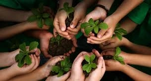

Social Activities
How I Advanced Healthcare and Education for Underprivileged Children in Vietnam
Kindness in Action — Bring miracles to transform the life of children with cerebral palsy
- Volunteered as a Partnership Manager at Give.Asia, connecting with 20+ hospitals and non-profit organizations to support children's healthcare and education
- Led 50+ campaigns to provide essential resources for underprivileged children
- Spearheaded fundraising efforts, impact report production, and community engagement to drive awareness and support
Results
- Raised more than 100,000+ SGD, directly supporting 40 families with children suffering from cerebral palsy
- Expanded sustainable healthcare and education initiatives through long-term institutional partnerships
How I Empowered Women in Vietnam to Improve Mental and Physical Health
- Developed and delivered 200+ in-app learning multimedia assets for beginners, providing accessible health education via a mobile app (Zenyoga)
- Organized monthly physical and mental health workshops for groups of up to 30 women, offering free access to wellness resources across Vietnam
- Leveraged technology and digital marketing to expand outreach and ensure accessibility to women's health education
Results
- Reached more than 1 million women across Vietnam from 2016 to 2019 through a free mobile app and nationwide workshops
- Provided free and inclusive health education, making wellness resources accessible to women of all backgrounds